Префектура Симанэ · Мацуэ и Идзумо · сладости
Сладости князя Фумаи: старые кондитерские Мацуэ и Идзумо
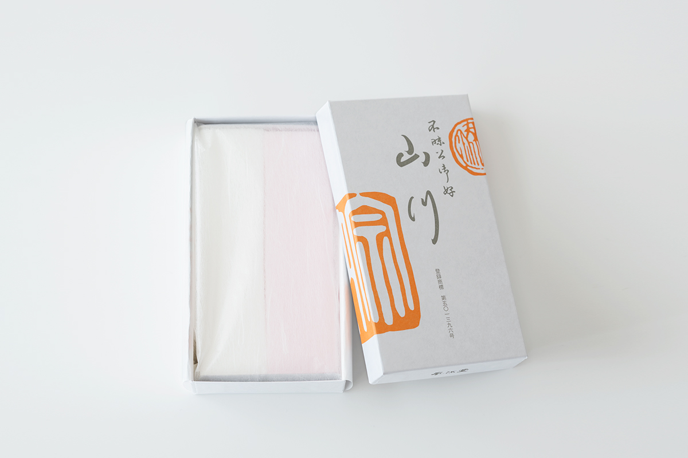
В Мацуэ, старом замковом городе на берегу озера Синдзи, до сих пор продают сладости, названные по стихам князя, который жил чайной церемонией. Соседний Идзумо добавляет к ним имбирные конфеты по рецепту 1715 года и сконы при гончарной мастерской.
История
Князь, который любил чай
Фумаи Мацудайра (1751–1818) был седьмым правителем княжества Мацуэ и одним из самых известных мастеров чайной церемонии своей эпохи. Он навёл порядок в казне, поддерживал ремёсла, собрал знаменитую коллекцию чайной посуды, построил чайный домик Канден-ан и заказывал у местных гончаров чаши по своему вкусу. К тому же князь был большим сладкоежкой. Многие сладости, которые до сих пор продают в Мацуэ, получили названия по его стихам, а на упаковке пишут, что эту сладость «любил князь Фумаи».
Дух его чайной церемонии в Мацуэ жив до сих пор, а вместе с ним и вагаси, японские сладости к чаю. Старые кондитерские города по-прежнему делают сладости, которые когда-то подавали на чайных собраниях князя.
Есть и вторая нить. Префектура Симанэ тесно связана с мингэй, движением за красоту простых вещей, сделанных руками. В городе Идзумо есть Музей мингэй Идзумо, а гончарные мастерские, которых когда-то лично учил Бернард Лич (1887–1979), английский керамист и друг движения, до сих пор делают прекрасную посуду. Сладости, о которых пойдёт речь, выбрала исследовательница японских сладостей, которая много лет ищет по всей стране «сладости мингэй»: простые, честные и красивые, как деревенская посуда.
Основатель движения мингэй Мунэёси Янаги (1889–1961), философ и собиратель народного искусства, в книге «Япония ручной работы» отдельно вспоминал князя.
«В Идзумо был князь из рода Мацудайра»
Мунэёси Янаги, «Япония ручной работы»
Дальше Янаги перечисляет всё, что сделал Фумаи: обогатил край, развивал культуру, собирал посуду, строил чайные комнаты. По его словам, спокойный и мирный характер князя передался и людям Идзумо.
Фурюдо
«Ямакава»: горы и река
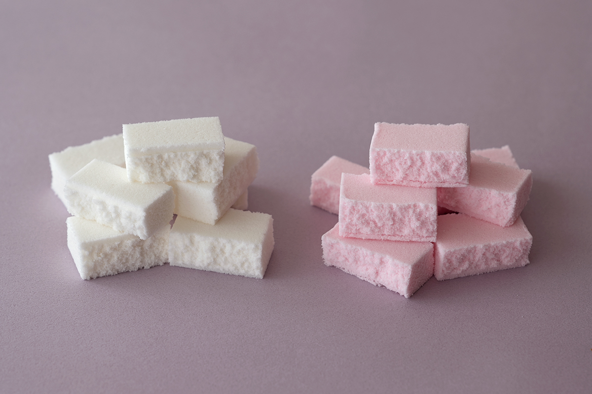
Самую знаменитую сладость Мацуэ назвал сам князь Фумаи, взяв слова из своего стихотворения. «Ямакава» значит «горы и река»: красная полоска изображает осенние горы в багряных клёнах, белая полоска изображает реку. Её причисляют к трём великим сладостям Японии. Это утигаси, сладость, спрессованная в форме, и на вкус она мягкая и чуть влажная.
Кондитерская «Фурюдо» открылась в 1890 году и остаётся одной из лавок, где «Ямакаву» делают до сих пор. Рецепт пришлось восстанавливать заново: мастера разбирали старинные записи, и, по их словам, это было очень непросто.
Во рту «Ямакава» тает и оставляет лёгкую сладость, которая не задерживается на языке. На этом фоне яркий вкус маття раскрывается полностью. Если вы едете в Симанэ ради мингэй, эту коробку стоит привезти домой.
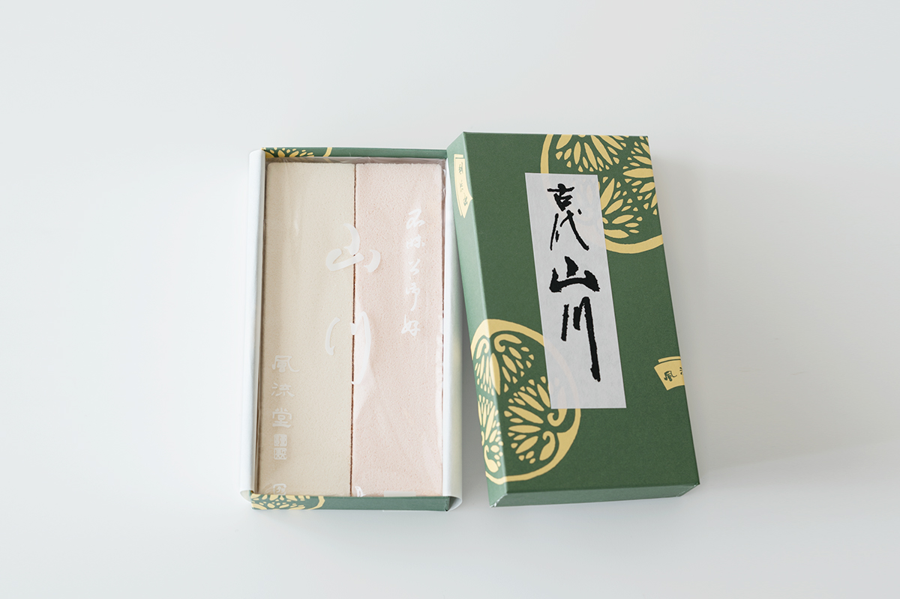
«Фурюдо», главный магазин в Тэрамати
- Адрес
- префектура Симанэ, Мацуэ, Тэрамати, 151
- Телефон
- +81 852-21-3241
- Часы работы
- 9:00–18:00
- Выходные
- первое воскресенье месяца
- Сайт
- furyudo.jp
Сайундо
Три сладости одной лавки
«Вакакуса»: молодая трава
Кондитерская «Сайундо» открылась в Мацуэ в 1874 году, и её основатель возродил весеннюю сладость для чайных собраний «Вакакуса». Название тоже взято из стихотворения князя Фумаи, и рядом с ним на упаковке так и пишут: «любимая сладость князя Фумаи».
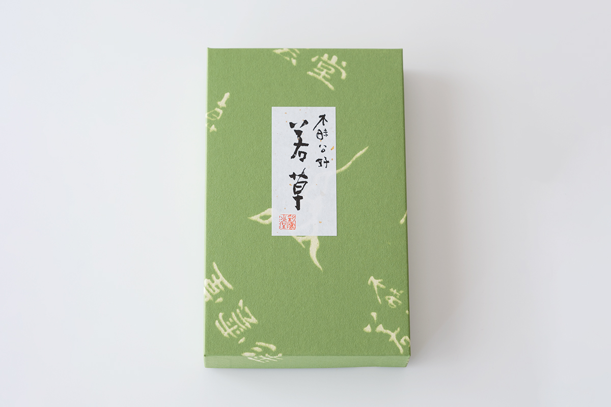
«Вакакуса» это пышный гюхи, мягкое тесто из клейкого риса, обсыпанное светло-зелёной рисовой мукой. Рис берут хороший, из горного Оку-Идзумо, а замешивают тесто опытные мастера по собственному способу. Каждый брусочек похож на первую весеннюю траву. Сладость простая и красивая, и есть её лучше всего весной.
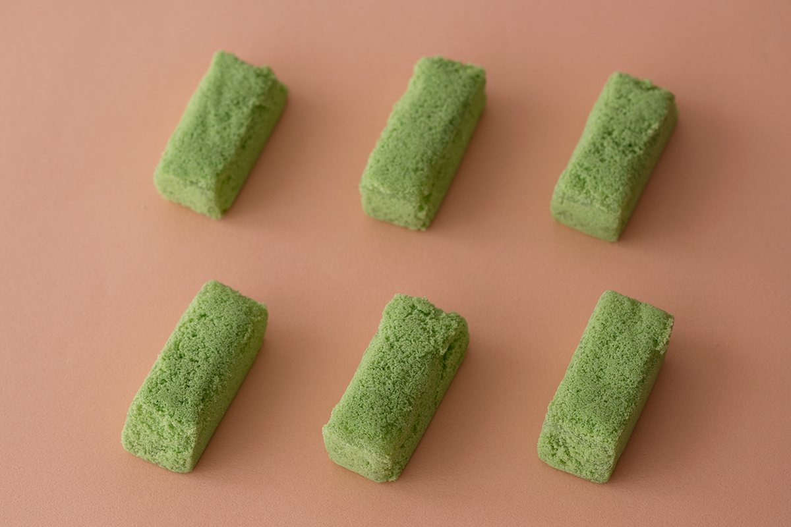
В «Сайундо» дух мингэй видно и в упаковке. Оберточную бумагу расписал от руки Сико Мунаката (1903–1975), один из самых известных японских художников двадцатого века, близкий к движению мингэй. Обычно его знают по гравюрам, поэтому живой рисунок кистью здесь особенно интересен. Вывеску с названием лавки над главным магазином тоже написал он. Исследовательница советует: если ищете подарок из поездки по местам мингэй, идите в «Сайундо».
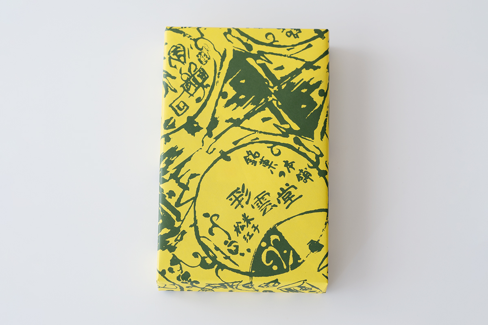
«Ямакацура»: три слоя
В 2024 году «Сайундо» исполнилось 150 лет. Кроме «Вакакусы» здесь есть сладость моложе: «Ямакацуру» придумали в 2001 году к 250-летию со дня рождения князя Фумаи.
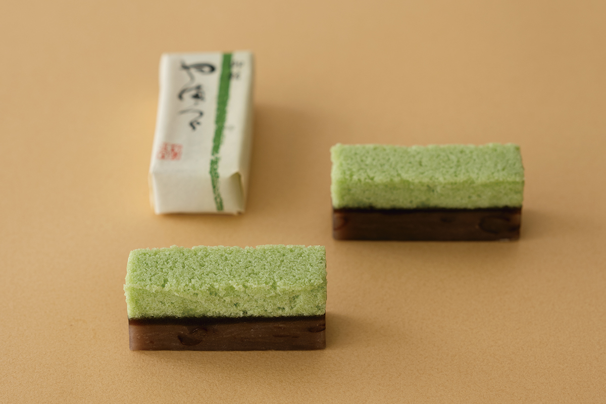
Это прессованная сладость из трёх слоёв. Внизу ёкан, плотное желе из сладкой бобовой пасты, из красной фасоли адзуки, с целыми зёрнами. Над ним ёкан на чёрном сахаре, а сверху легко насыпана крошка из бобовой пасты цвета молодой листвы. Если отрезать кусочек, сначала чувствуешь каждый слой по отдельности, а потом они складываются в один мягкий вкус.
У князя Фумаи есть известное наставление о чайной церемонии, и оно хорошо подходит к этой сладости.
«Принимая гостей, думай как гость. Приходя в гости, думай как хозяин»
князь Фумаи Мацудайра
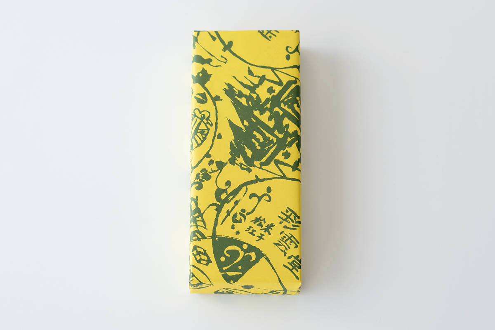
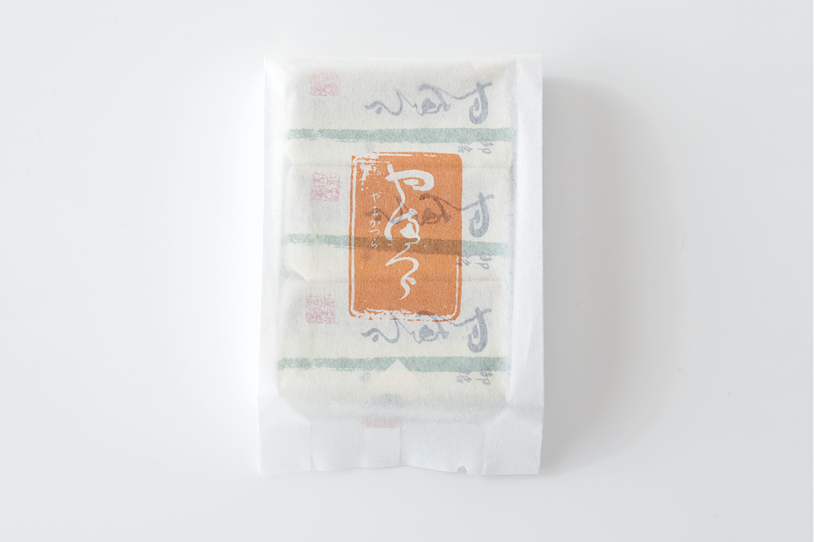
«Нэгаи-гаси»: магатама на удачу
Магатама это изогнутые бусины, похожие на запятую, которые носили в Японии с доисторических времён. В 1970-х годах движение мингэй заново открыло их красоту, и магатама ненадолго вошли в моду как украшение.
Край Идзумо называют родиной японских мифов, здесь стоит святилище Идзумо-тайся. С древности тут делали магатама, и особенно ценились бусины из зелёного агата, который добывали в Тамацукури под Мацуэ. Узор из магатама встречается здесь повсюду, вплоть до бумаги ручной работы.
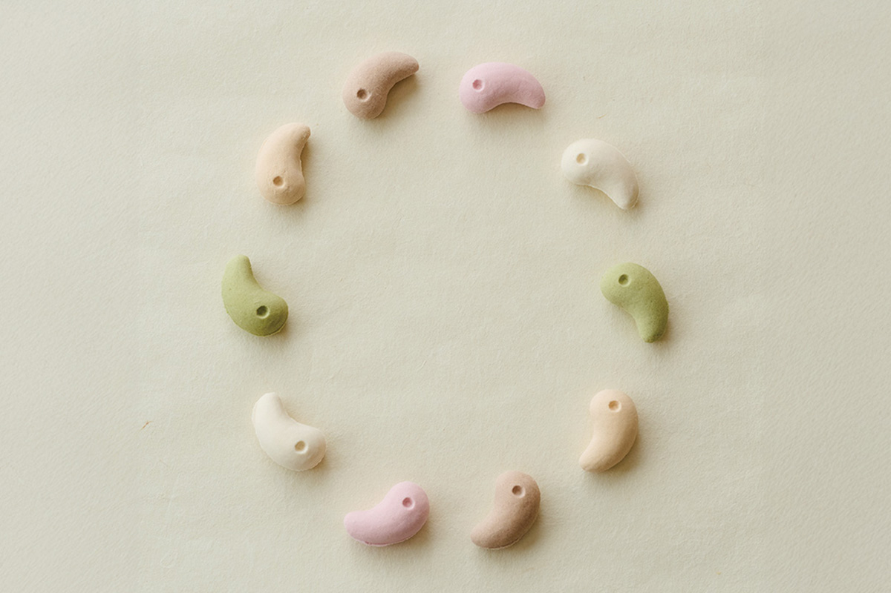
В 2013 году, когда в святилище Идзумо-тайся проходило большое обновление, «Сайундо» придумала сухую сладость в форме магатама на один укус. Название «Нэгаи-гаси», «сладость желаний», навеяно «Камнем желаний», знаменитым камнем в онсэне Тамацукури. В коробке пять вкусов: сахар васанбон, клубника, юдзу, маття и какао. Сладость тает во рту и подходит не только к чаю, но и к кофе.
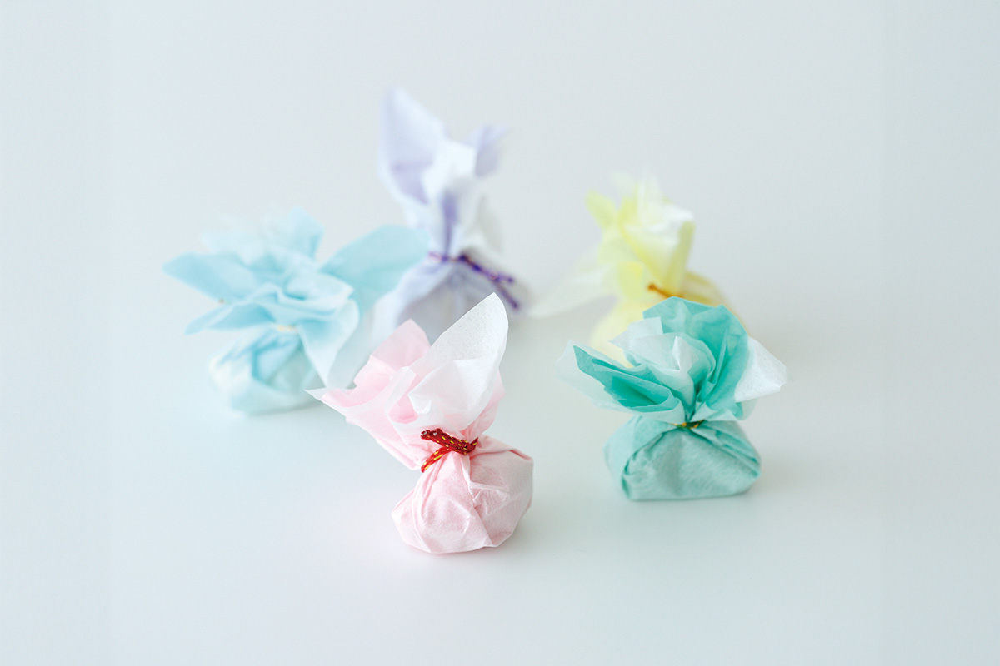
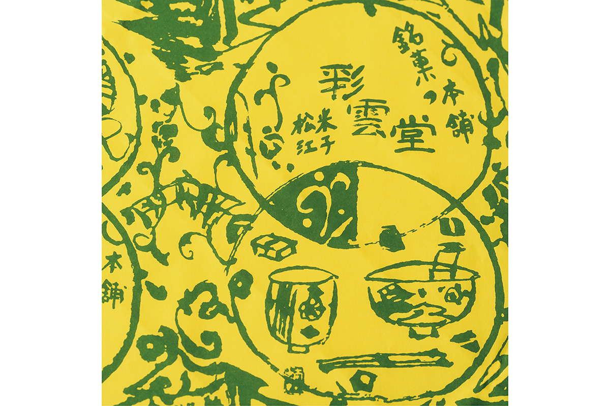
«Сайундо», главный магазин
- Адрес
- префектура Симанэ, Мацуэ, Тэндзин-мати, 124
- Телефон
- +81 852-21-2727
- Часы работы
- 9:00–18:00
- Выходные
- четверг
- Сайт
- saiundo.co.jp
Санъэйдо
«Натанэ-но сато»: поле рапса
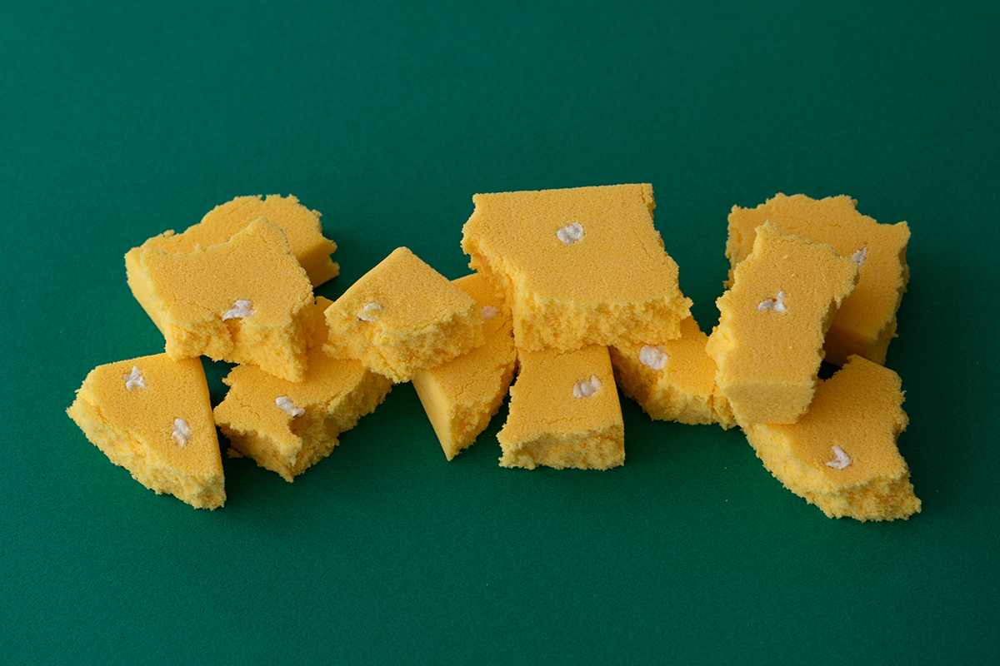
Ещё одна старая кондитерская Мацуэ, «Санъэйдо», хорошо известна любителям мингэй. В главном магазине продают сладость «Хинодэмаэ», «Перед рассветом»: её название придумал гончар Кандзиро Каваи (1890–1966), один из создателей движения мингэй и большой любитель сладкого.
Весной здесь стоит взять «Натанэ-но сато», «Деревню рапса». Это ещё одна любимая сладость князя Фумаи, и придумана она по его стихотворению: «Цветёт сузуна в поле, утренний ветер чуть веет, и всё больше рукавов у порхающих бабочек». Жёлтый ракуган, сухая сладость из рисовой муки и сахара, окрашен гарденией и изображает поле цветущего рапса. Белые зёрнышки жареного риса на нём это бабочки над весенним полем. Получилась весна, нарисованная почти абстрактно.
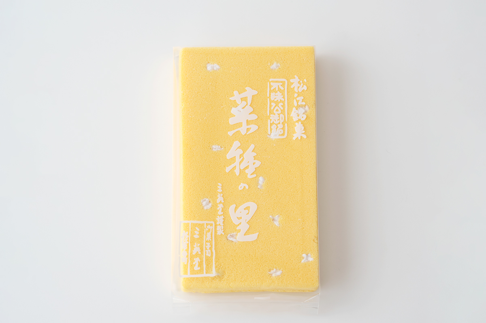
Мастера просеивают смесь вручную и прессуют её в форме, и в этой работе видна красота ручного труда. Во рту сладость рассыпается, и к ней хорошо подходят маття или зелёный чай гёкуро.
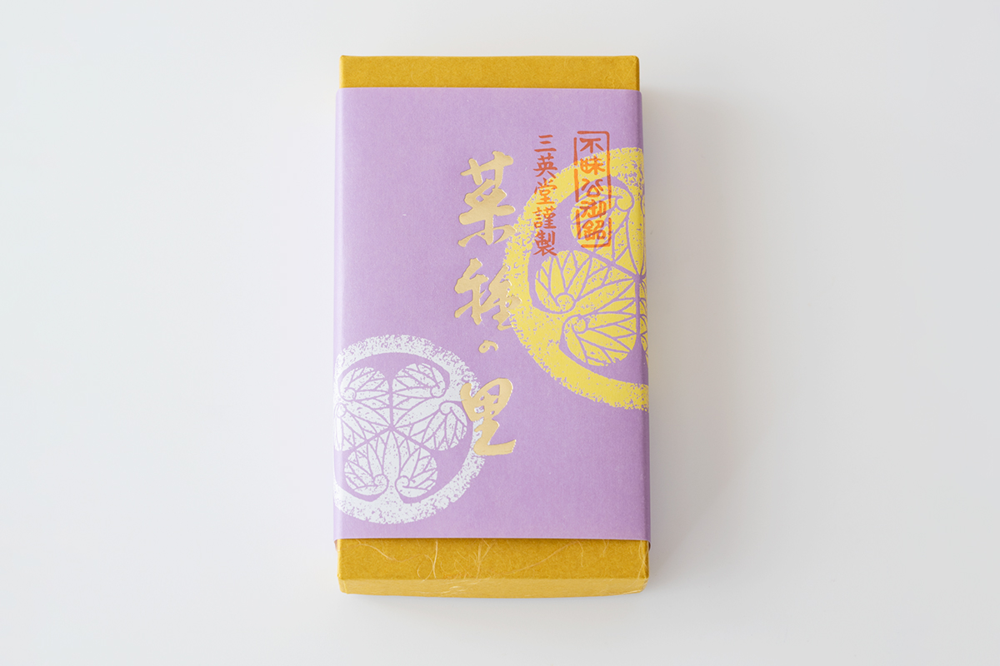
Если будете в Идзумо, загляните и в Музей мингэй Идзумо. Его открыли в 1974 году на средства самой богатой крестьянской семьи края: под музей перестроили часть её старинной усадьбы, и смотреть там есть на что.
«Санъэйдо», главный магазин в Тэрамати
- Адрес
- префектура Симанэ, Мацуэ, Тэрамати, 47
- Телефон
- +81 852-31-0122
- Часы работы
- 8:30–17:30
- Выходные
- нерегулярно
Курумая
Имбирные конфеты с 1715 года
Город Хирата, сегодня часть Идзумо, славится имбирными конфетами сёгато, а лавку «Курумая» называют местом, где их придумали. В довоенной книге об Идзумо есть очерк о народных ремёслах Симанэ, и о здешних конфетах там написано с восторгом.
«Имбирные конфеты „Курумаи“ толще и плотнее любых других. Они не сыреют ни в сезон дождей, ни в осенние заморозки и полностью сохраняют вкус имбиря. Это лучшие конфеты в стране»
очерк о народных ремёслах Симанэ
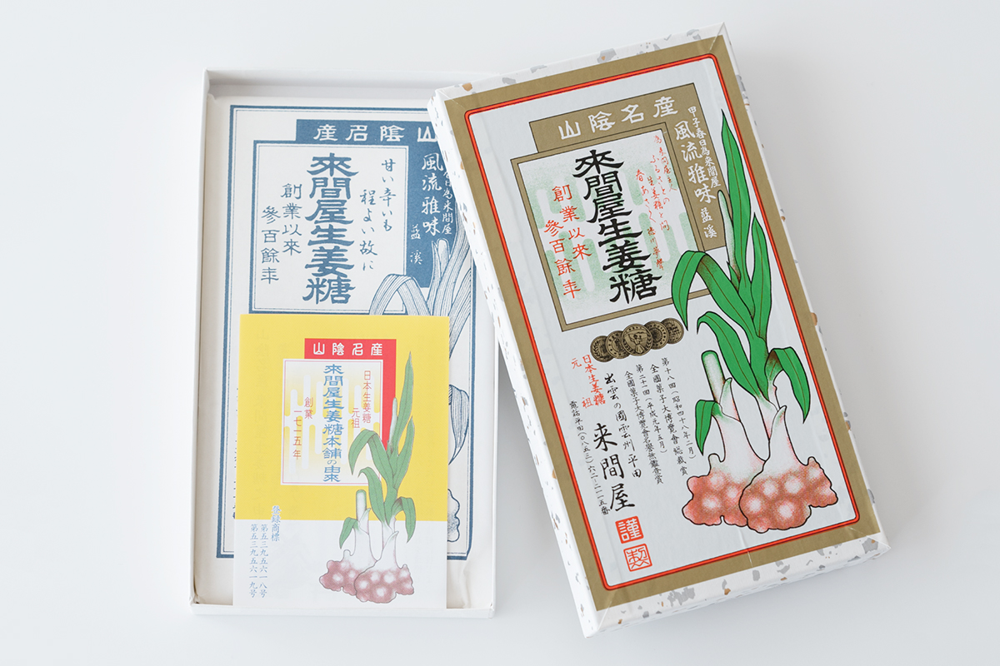
Изобрёл их Бундзаэмон Курумая, основатель лавки, живший в начале XVIII века. Он долго экспериментировал и ошибался, пока не понял: лучше всего подходят старые корни местного имбиря сорта Сюссай, волокна которого при варке растворяются без остатка. В 1715 году рецепт был готов, и семья хранила его в тайне, передавая только одному наследнику.
Лавке больше трёхсот лет, а состав конфет почти не изменился: сахар и имбирь, больше ничего. Тонкая, чуть влажная пластинка ломается под зубами, и на языке раскрываются острота и аромат имбиря Сюссай. Это и есть настоящая сладость мингэй.
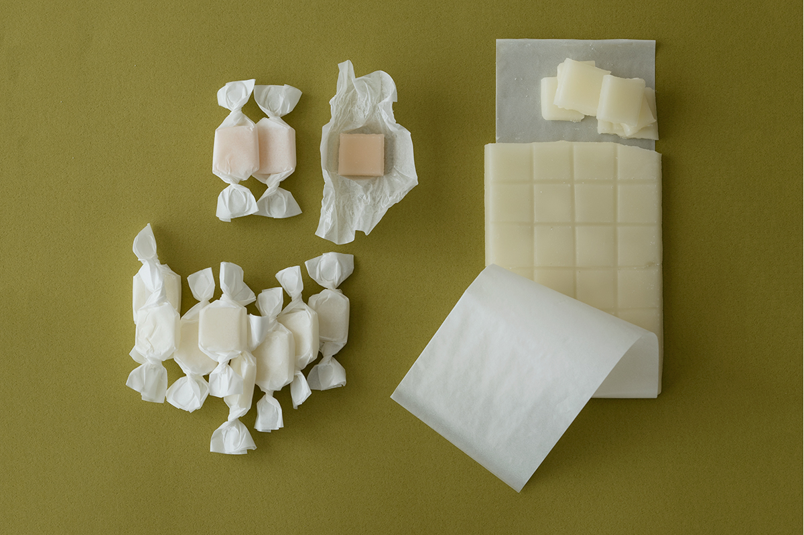
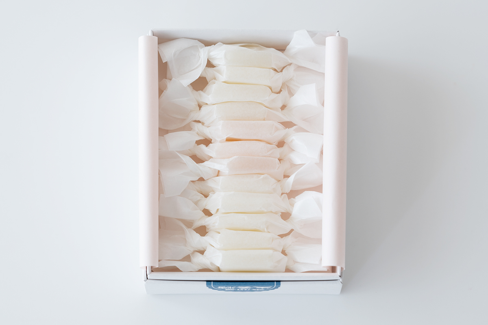
«Курумая»
- Адрес
- префектура Симанэ, Идзумо, Хирата-тё, 774
- Телефон
- +81 853-62-2115
- Часы работы
- 9:00–19:00
- Выходные
- нерегулярно
Сюссай
Сконы у гончарной мастерской
Гончарная мастерская Сюссай-гама в Идзумо появилась в 1947 году: её открыли пятеро молодых людей с прямым и честным замыслом. Учиться они ходили к главным людям движения мингэй: Мунэёси Янаги, Сёя Ёсиде (1898–1972), Кандзиро Каваи, Сёдзи Хамаде (1894–1978), Бернарду Личу и Сори Янаги (1915–2011). Сори Янаги, сын Мунэёси, именно здесь сделал урну для праха отца. Сам Мунэёси Янаги в книге «Япония ручной работы» хвалил молодую мастерскую из деревни Сюссай за то, что она старается делать хорошие вещи. Её принцип «делать здоровую и красивую посуду для каждого дня» передаётся от поколения к поколению.
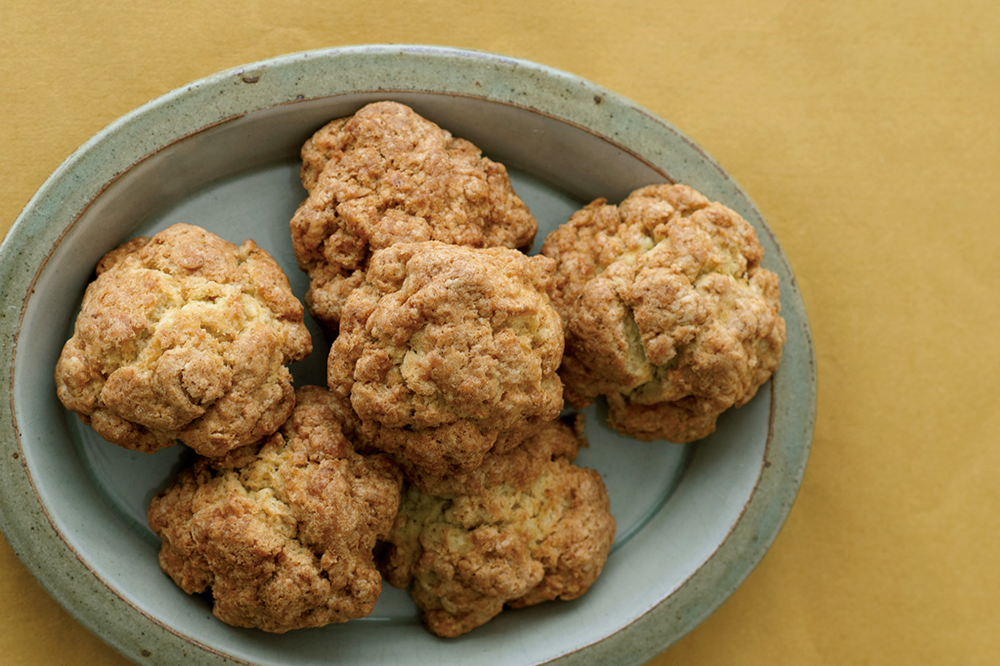
В 2018 году мастерская открыла «Сюссай курасино виллидж», комплекс обо всём, что делает жизнь удобной и приятной. Это и есть «живой музей», о котором говорил Сёя Ёсида, врач и один из организаторов движения мингэй. Будь отец и сын Янаги живы, они бы, наверное, воскликнули: вот оно, то самое!
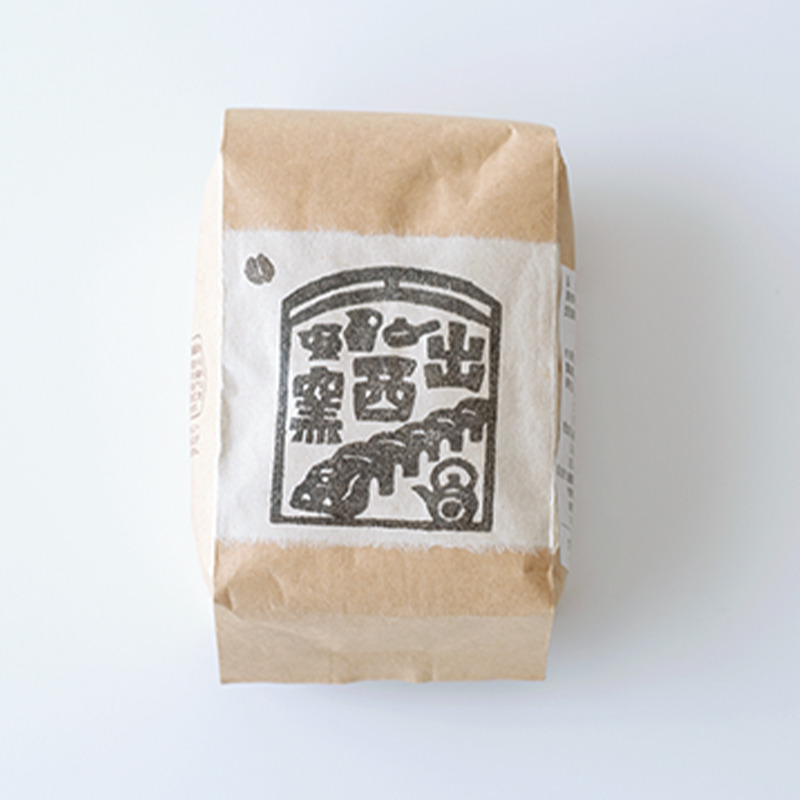
В пекарне и кафе «Ле Кошон д'Ор Сюссай» на территории комплекса пекут хороший хлеб. К чаю или кофе берите простой скон: влажный внутри, с румяной корочкой. Он честно вкусный и отлично смотрится на посуде Сюссай.
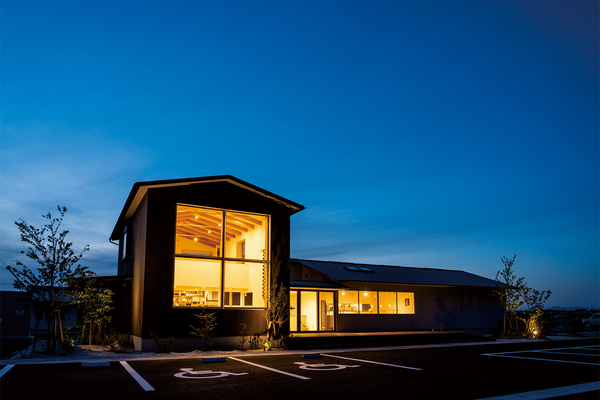
«Сюссай курасино виллидж»
- Адрес
- префектура Симанэ, Идзумо, Хикава-тё, Сюссай, 3368
- Телефон
- +81 853-72-0239
- Часы работы
- кафе 9:30–17:00, пекарня 9:30–17:00
- Выходные
- вторник, вторая и четвёртая среда месяца
Фото: Вакана Баба.